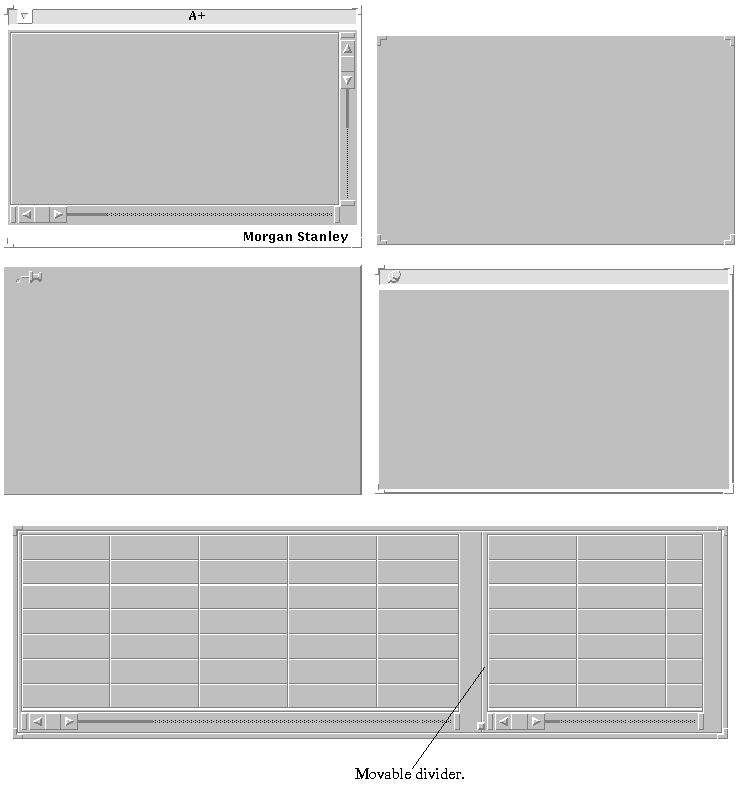

This chapter describes screen interactions in A+ applications from the user's point of view. These interactions are covered from an application programmer's point of view in "Introduction to Screen Management", "Display Attributes", "Attributes with Callbacks", and some of the chapters devoted to individual display classes - e.g., in a section of the graph chapter. Much of the behavior discussed in this chapter is due to the window manager of the underlying system.Many screen interactions - repositioning objects, for instance - are with OLVWM or OLWM, rather than with A+, so some aspects of this interaction are discussed here; see "The Window Manager", below. Windows for A+ applications contain buttons, menus, tables, etc., all with various forms of user interactions, which are discussed in "The A+ Screen Manager". Not all interactions can be addressed in a general document like this one. For example, applications may use any of the function keys F1 through F12 for any purpose, but there is no default use of these keys that can be discussed here. For readers familiar with window-based applications, a fast path through this chapter is the first two sections of "The Window Manager" and the sections of "The A+ Screen Manager" up to "Interactions Peculiar To Individual Display Classes".
The mouse has three buttons, which in this manual are called simply the left button, middle button, and right button. (When the mouse has only two buttons, the middle button is simulated by using the other two buttons simultaneously.) Depressing a button and releasing it is called clicking. Clicking twice in rapid succession is called double clicking. For mouse buttons only, pressing a button always means holding the button down until you are told to release it. In this chapter, button means either a mouse button or a button object on the screen.Associated with the mouse is a pointer, which can appear anywhere on a workstation screen. It may take several forms. When it is in the shape of an arrow, it refers to the spot on the screen that is at the point of the arrow. When it is in the shape of a target, you can resize a window. When it is in the shape of a clock or stopwatch, the system is busy. (See the s.BUSY and s.CLOCK parameters to change the appearance of the pointer.) Usually key and button actions that occur when the clock is shown are stored and acted upon as soon as the system is not busy, but sometimes they are ignored.
To click or press on an object, or when in some area, means to take that action when the pointer is in the designated place. In particular, to press a button pictured on the screen means to place the point of the pointer on the button and to click or press a mouse button - usually, to click the left button.
The screen can contain several windows, which appear as delineated rectangular areas. The windows in the first figure illustrate many of the variations that you may see in A+ applications. In A+, one speaks of top-level windows and popups. Popup windows have pins, as illustrated by the middle two windows in the figure; all other windows in shown there are top-level windows.Samples of Various A+ Windows:

Key and button actions apply to the window with focus, the window that the pointer is in. Usually you are given a visual clue to the window with focus, such as a brightened or different-colored outline, like the top left window in the figure. A window may be composed of several objects, such as buttons and tables, and if the window has focus then at most one of these objects has keyboard focus, meaning that any keys that are pressed will affect that object.
A window always has a frame around it, and the frame may have a header at the top or footer at the bottom, bands as wide as the window. The upper left window in the figure has both a header and a footer, the one on the upper right has neither, and the ones in the middle have headers only. The frame may also have raised corners at the frame corners called resize corners, as shown in these examples.
In addition, windows may have:
The part of a window that is inside its frame is called the body of the window here. Note that the header is not part of the body. The body of a window may contain one or more objects, or panes. The positions of the panes are fixed, but the user can make more of one pane visible and less of another if the pair is separated by a movable divider.
- a button in the header, on the left side, called the window menu button (not found on popups); see the upper left window in the figure;
- a pin, shown either on its side or as if pushed into the screen (found only on popups); see the middle windows in the figure;
- a pointer;
- scroll bars, which can appear on the right and on the bottom; see the upper left window in the figure;
- movable dividers, which can be either vertical or horizontal; see the bottom window in the figure.
Scroll bars actually belong to objects within windows - their behavior is not controlled by the OL[V]WM - and so it is common to see more than one vertical or more than one horizontal scrollbar in one window, as in the one at the bottom of the figure. Multiple dividers in a window, though less common, are also possible.
The visible sign that a window has been selected - given focus - is a brightening of its frame and frame outline; see the middle right window in the figure. You can select a window simply by moving the pointer into it. (It is possible that a window may come up with the mouse pointer in it but without keyboard focus; if this happens, you can move the pointer out of the window and back into it to get keyboard focus.) The keyboard may also be used to select a window, providing the means to step through the windows one at a time. For this purpose a traversal order is established for each application. When the pointer is in the body of one window of an application, you can select the next one in the traversal order by pressing Control-Tab. To select the previous one, press Shift-Control-Tab. When you use Control-Tab or Shift-Control-Tab, the pointer is automatically moved to the selected window.
Overlapping windows are presented as if in three dimensions, and the one that is fully visible is said to be in front, or to be raised. To lower a window is to place it furthest back, so that it is obscured by all windows that overlap it. There are several ways to raise and lower windows. They all act as toggles: if the window is not in front, it is moved there; if it is in front, it is moved to the back.On a keyboard with a Front key, place the pointer anywhere in the visible part of the window and press Front to place it in front or in back, depending upon its present position. On a keyboard without such a key, position the pointer the same way, and press Alt and hold it while pressing F5 (i.e., press Alt-F5). Double-clicking the left button in a visible part of the header but not on the window menu button or pin (if any) will usually accomplish the same result, and pressing the right button there will generally produce a window manager menu that offers you this action. Likewise, if there is a window menu button, pressing the right button on it will produce another menu that may offer you this action.
You can remove a window from the screen entirely by choosing Quit from its application menu. Likewise, pressing the right button while in the header but not on the window menu button usually produces a window manager menu with Quit or, for popups, Dismiss as one of its options (although an application may choose not to honor a request to remove the window from the screen). A popup may have a displayed button labeled Done or Cancel or the like, clicking on which has the effect of a Quit in addition to performing some task for the application.
A window can be dragged around on the screen by placing the pointer on the frame anywhere that does not have special significance - within the header is a convenient place -, pressing the left button, moving the pointer and thereby the window to the desired location, and releasing the button. During this operation, the window will continue to be displayed in its current location, but a rectangle, the outline of the frame, will follow the mouse, so that the potential locations can be seen. Also, a small label or tag may appear that says "location:" and gives the horizontal and vertical coordinates in pixels of the location to which the upper left corner of the outline has so far been dragged.
If a window has special corners, as do all but the middle left window in the figure, it can be made larger or smaller by the user. When the mouse pointer is moved to one of these corners, the pointer changes to a target. Then you can press the left button, drag the corner wherever you want, and release the button. The new size and shape of the window is established by the point to which you dragged that corner and the (original) location of the diagonally opposite corner. During this operation, as during dragging, the display of the window remains unchanged but a rectangle gives the outline of the potential new frame for the current mouse location. Also, a small label or tag may appear that says "size:" and gives the horizontal and vertical sizes corresponding to the current location, in characters and lines, respectively.In one or both dimensions, you can drag the selected corner past the fixed corner, which remains catercorner to it.
Sometimes not all the text or other contents of an object can be displayed in it. When that happens for a dimension, horizontal or vertical, a scroll bar is displayed, an object that looks somewhat like an elevator shaft (see the window on the top left of the figure and the bottom window). At the ends, the scroll bar has anchors. Connecting the anchors is a cable, with a scroll box somewhere along the cable, (Openlook) or a channel with a slab in it (Motif). Stops may appear on the cable that restrain the scroll box from moving all the way to an end, thereby preventing the view area of the object from becoming partially or completely vacant. The relative size of the stops also indicates the proportion of the displayed object that is actually in view; the smaller the stops, the more out of view.Pressing the right mouse button with the pointer on a scroll bar produces a menu that lets the viewer select the Openlook or Motif look or the beginning or end of the object being viewed. Any change in appearance is only for the scroll bar pointed to, so an ugly combination of vertical and horizontal scroll bars is possible.
The left mouse button is used to select scrolling operations. The top and bottom thirds of the scroll box have arrows. Clicking on an arrow moves the display one element - e.g., line of text or row of data - in the indicated direction. Pressing on an arrow causes the display to move one element at a time until the button is released. Pressing on the middle of the scroll box and dragging it, by moving the pointer toward one anchor or the other, causes the appropriate part of the text to be displayed when the button is released. Clicking on the cable above or to the left of the box moves the display back one windowful (unless an extremity is arrived at), and clicking on the cable below or to the right of the box moves the display ahead one windowful. Pressing on the cable causes successive windowfuls to appear until the button is released. Finally, clicking on an anchor causes the displayed text to include the corresponding extremity.
There is also an action for the middle button: pressing on the cable moves the display so that the middle of the middle of the scroll box moves to the arrow position.
Some windows permit a user to reapportion the relative areas allotted to certain objects. Their special feature is movable sashes, or dividers, between objects, which allow you to control the proportion of the window that each object occupies, simply by moving the sashes. To move a sash, just place the mouse pointer on it, press the left button, drag the sash where you want it, and release the button. A small button is provided on the bottom of a vertical sash and on the right of a horizontal sash as a convenient place to locate the pointer.The bottom window in the figure has a vertical divider, which has been used to make more of the table on the left visible at the expense of the one on the right. There are also horizontal dividers to separate panes that are stacked vertically.
Pinning is a facility that allows application programmers to give users the ability to influence the removal of popups. For example, suppose an application has a single commit-or-cancel popup. Normally, such a popup appears when needed and disappears after the user clicks one of its two buttons. The application program can, however, include a pin, shown on its side, unpinned, as in the popups shown in this chapter. If you prefer to leave this popup on the screen instead of having it come and go all the time, you place the pointer on the pin and click the left button, causing the pin to be shown pressed in. The application program, before removing the popup, checks to see whether it was pinned, and if so, leaves it alone. The application can also originally include a pin that is shown pushed in, allowing you to click on it and thus unpin the popup, indicating that you would like it removed.A+ popups are programmed so that when the pin is pulled out, the popup is removed from the screen. The action is the same no matter who, programmer or user, pushed the pin in. Thus clicking twice on an unpinned pin removes such a popup.
A+ provides for multiple objects within one window, each with its own scroll bars, buttons, and entry fields as required (cf. the bottom window in the figure); for convenient movement between objects within a window, and within objects; for indicating actions to be taken through option selection and button presses; and for entering and editing data (even in graphical form).The interactions you can have with the display and the application program are:
All selections and choices can be made with the left mouse button, and the three forms of editing can be initiated with the three mouse buttons. In addition, selections can also be made by pressing keys. The behavior of the mouse buttons is presented first, followed by the forms of editing and the alternative forms of selection using keys. Finally, there is a series of sections on user interactions that are special to particular display objects like graphs and pages.
- selection and traversal: selecting an object or cell for choice or editing;
- choice: choosing an action or actions, a row or rows of a table, or whatever;
- editing: including input.
The visual form of some objects, such as menus, is distinctive and therefore easily recognized in applications. In other cases objects with very different behavior look alike, e.g., buttons and selected input cells. In practice, of course, confusion is unlikely because the actual behavior of an object will be clear from context, so a comparison of visual forms of the various objects is unnecessary. The basic objects for specifying actions and editing in cells appear in the next figure.
Along the top of the figure are various action objects. The object on the left with the title "Reports" is called a vertical cascade menu. The open and save items have small triangles to their right indicating submenus. Click on either item or triangle and a submenu will appear and remain visible. Any submenu item that itself has a submenu also behaves this way. Click on any item without a submenu and that action will be taken; any visible submenus will disappear as well. Click anywhere outside the currently displayed submenu and no action will be taken; once again, any visible submenus will disappear. You can also navigate the menu in the more usual fashion of putting the pointer somewhere on the menu, pressing the left button, and dragging the pointer up and down the menu items and over the submenu indicators. If things freeze up during a menu operation, try pressing the Esc key.To the right of the vertical cascade menu are two other menus under the title "Data Selection". The top one is a simple menu, holding a set of choices but no further submenus. Click the left button on the triangle to the right of the title "Directory" and the submenu will appear. Then click on any item and it will be chosen, as well as displayed to the right of the triangle. The menu under the label "Directory" is a horizontal cascade menu; except for the top menu's being displayed horizontally, it is exactly like the vertical cascade menu.
The next object to the right is a vertical set of buttons entitled "ReCalc". Press any one of these buttons and the indicated action will be taken. The selected button may appear with a colored band around it, or, depending on the application, some other color indicator.
The next object to the right, entitled "Currency", is a check object, which allows you to select any number of items from the list. Simply click on the object or the square next to it to select it, and click again to "deselect" it. The squares appear depressed and (usually) in a different color to indicate selection.
The final object of the top row of the figure, the one all the way to the right, is a radio box. It is like a check box, except that one and only item can be chosen (as in a pushbutton radio). Check boxes always have square indicators, and radio boxes have diamond indicators.
Below the top row of action objects is an array of cells. Click on any one of them to select it, and it will appear raised. Depending on the application, it may also have a different color, and all the cells in its row may have still another color. Below that array of cells is another array of cells that differs from the first by having column labels C 1, C 2, etc. Note that no cell is selected in this table. A column can be selected by clicking on its label, and the default behavior is:
The application may do something different, e.g., compute a column total.
- if there is no currently selected cell, the top cell in that column is selected;
- if there is a currently selected cell, the cell at the intersection of the row of the currently selected cell and the selected column is selected.
Below the table of cells is a third variation that additionally has row labels and a corner label in the upper left. Any row or column can be selected, as well as the corner area, by clicking on its label. Selecting a column proceeds in the same way as above, and selecting a row in a similar way.
Finally, at the bottom there is an array of labelled, raised input cells. Click on a cell or its label to select it; the default behavior is for the label and cell to appear with a highlighted border.
In the above examples of arrays of cells, a single click selects an individual cell or row. Choosing must be done by double-clicking. Choosing causes a "refer" event to occur and a callback to be executed if a refer callback function was set.There are two selection modes, single and multiple.
In single selection mode, clicking the left mouse button on a cell, with the Control or Shift key or neither held down, selects that row and cell and eliminates any previous selection.
In multiple selection mode: Control-click changes the selection status of the row pointed to; Shift-click extends a selected block to the row pointed to if that row is unselected, and reduces the block otherwise, to "deselect" the row; and click alone selects the row pointed to and eliminates any other rows from the selection. Each of these three actions has a variant, in which the left mouse button is held down and the pointer dragged, involving all the rows the pointer passes over.
The cells in the arrays of the figure are input-output cells. Data can be displayed in them and users can enter new or modified data in them. An application can protect cells so that users cannot modify them. When a cell is protected, clicking on it with either the middle or right mouse button has the same effect as clicking on it with the left button, and also produces a beep. If the cell is not protected, then clicking on it with the middle or right button, besides producing the ordinary left button effect, causes one of the three input modes to be automatically initiated.
There are two input modes for cells such as those in the figure:
To enter overwriting mode initially, select the cell using the middle mouse button, taking care that the pointer is at the position where the overwriting is to begin. The text cursor is a blinking block positioned over the character to be overwritten.
- overwriting, or replacement, character by character, anywhere in the field;
- insertion, anywhere in the field; if the mode is entered by just typing a character or pressing Backspace, the entire previous contents of the cell are deleted.
To enter insertion mode initially, either: select the cell using the right mouse button, again taking care to position the pointer; or, when the cell is already selected (perhaps by use of the left mouse button), either press the Insert key to begin at the end of the current contents, or press Backspace or just start to type to delete the previous contents. The text cursor is a blinking a vertical bar at the insertion point.
An attempt to enter either input mode when the selected cell is protected will elicit a beep.
For an object of the array, command, matrix, scalar, slot, or table class, the space available for editing, in characters, is either 256 (with scrolling on entry and by use of the arrow keys) or the number that fits in the visible space. An attempt to enter too many characters elicits a beep.
Once an input mode has been entered:
For the command and text classes, the cursor attribute describes the text cursor position, as the number of characters from the left. It is 0 when the object is not in input mode. Its vector value for the page display class is described in "Page Objects".
- clicking the left button when the pointer is within the input field moves the text cursor position to the pointer position, and makes the mode insertion;
- clicking the middle button when the pointer is within the input field moves the text cursor position to the pointer position, changing to overwriting mode if the mode was insertion;
- clicking the right button when the pointer is within the input field moves the text cursor position to the pointer position, changing to insertion mode if the mode was overwriting;
- pressing the Insert key toggles between overwriting and insertion modes without moving the text cursor position;
- typing Control-e moves the text cursor to the end of the cell and Control-a moves it to the beginning;
- pressing Shift-middle-mouse-button pastes the primary selection contents at the pointer position;
- pressing the left and right arrow keys or Control-b and Control-f moves the text cursor within the field;
- pressing the Enter key ends input, meaning that the present contents of the edit area become the contents of the cell;
- pressing any of the following keys ends input and selects a new cell as indicated: the Tab key (usually) selects the cell to the right if one is there; the Shift-Tab the cell to the left; and the up or down arrow key the cell above or below, respectively, if there is no appropriate line in the present cell;
- pressing the Esc key ends input mode and returns the contents of the cell to what it was before, but does not select another cell.
An attempt to enter erroneous input (by pressing Enter, Tab, etc. with an illicit entry in the cell) elicits an error message; the input mode and the cell remain as they were, to permit the entry to be corrected.
A+ provides facilities that allow application programmers to permit users to employ the primary selection buffer. If so enabled, a user can insert Emacs or XTerm text in a displayed object, and can also clip text from a displayed object and insert it in an Emacs or XTerm window. If an application uses these facilities, its documentation should describe the procedure for copying or cutting and pasting text.
The visible sign that an object has been selected is a highlight line around it, usually yellow. When the currently selected window was first selected, some object within the window may or may not have been selected. Pressing Meta-Tab or, on an IBM keyboard, Alt-Tab will select a new object if one has been selected, or the first selectable object if not. The selection order is determined by the application, and repeatedly pressing Meta-Tab selects the objects in that order. To select the previous object in that order, press Shift-Meta-Tab or, on an IBM keyboard, Shift-Alt-Tab. Note that the pointer is not moved to reflect the Meta-Tab selections.Not all selectable areas can be selected with Meta-Tab or, on IBM, Alt-Tab, nor can you always know beforehand the ones that can. For example, in the figure, pressing Meta-Tab repeatedly will (most likely):
- select all the action items along the top row in some order;
- at some point select any of the arrays of cells entitled "Array of Cells", "Table of Cells", or "Matrix of Cells". When one of these arrays is selected, a raised cell within it has keyboard focus, meaning that any character key presses will be directed at it;
- at some point select just one of the labelled cells in the array entitled "Array of Labelled Cells", or, depending on how the application was designed, select them all, one by one.
Once an array of cells like those in the figure has been selected using Meta-Tab and Shift-Meta-Tab (Alt, not Meta, on IBM keyboards), a cell within it is selected with the Tab, Shift-Tab, and arrow keys. Arrays of labelled cells like the one entitled "Array of Labelled Cells" in the figure, however, are an exception. If the application is designed so that Meta-Tab traverses all the labelled cells, then the Tab, Shift-Tab, and arrow keys have no effect here. However, if Meta-Tab selects only one labelled cell, then when that cell is selected, the Tab, Shift-Tab, and arrow keys can be used to select one of the other labelled cells.When keys are used to select a cell, any required scrolling is done automatically, and if no movement is possible in a given direction, the action of the corresponding key is null.
The PgDn, PgUp, End, and Home keys can be used in the usual ways to move the view window over a partially visible array of cells.
When a horizontal menu has focus, the left and right arrow keys move you across the menu. For a vertical menu, and therefore all submenus, the up and down arrow keys move you up and down from one item to another. Movement into an item with a submenu causes the submenu to appear; there is no need for a further down arrow or right arrow. For a set of choices like the one labeled "Directory" in the figure, the down arrow leads to the menu of choices. Press the Enter key when the selected item is an action item to have that action taken; any visible submenus will disappear.
Items on a menu or submenu can also be selected by pressing the keys for the underlined characters. If the item is an action item, the action will be taken and any visible submenus will disappear; if the item has a submenu, it will appear. If two or more items in the same menu or submenu have the same first letter or underlined letter, pressing the key for that letter references the topmost, or leftmost, item. The other items with the same first or underlined letter cannot be referenced in this way. This method can be intermixed with the use of arrow keys.
If the action is enabled, Meta-Delete or, on IBM keyboards, Alt-Delete deletes the selected row from an array of cells.
Table Objects
If the application permits, a user can change the width of a column in a table. When the pointer is over a column separator it changes to a two-headed horizontal arrow. Pressing the left mouse button causes a green outline to appear around the column to the left. As the pointer is moved, the right side of the outline moves and becomes white whenever it is not at the current separator position. When the button is released, the column fills the outline and columns to the right of the one whose size was changed are moved accordingly.If the application permits, a user can move columns within a table. When the pointer is over a tableField or its title area, pressing Meta-left-mouse-button (Alt-left-mouse-button on IBM keyboards) causes the pointer to change to a two-headed horizontal arrow and the column to be covered by an image of the column and title area, with a yellow outline. As the pointer is moved, the image moves horizontally. When the button is released, the column is moved past any columns between the image and its original location, and the table variable is respecified accordingly. If the new location is the same as the old, no respecification of the table variable takes place. (Actually, you can use any mouse button for this operation and you can press Control at the same time if you are so inclined; indeed, you can press several mouse buttons simultaneously and the drop will take place when the last button is released.)
Password Objects
These objects provide password protection to applications. They look like the labelled cells in the figure. Input is started only by selecting the object and pressing a key (insertion, although there is no initial text), and it is completed by pressing Enter. Input characters are masked, usually by *'s, and the pointer is positioned to the right of the last * unless you move it.Hscale and Vscale Objects
A user can change the settings of hscale or vscale objects using the mouse buttons and the Home, End, Page Up, Page Down, and arrow keys.When the pointer is anywhere in the object:
When the pointer is in the slider slot but not on the slider:
- Pressing Home moves the slider to the left or top and sets the value to min or max; pressing End moves the slider to the right or bottom and sets the value to max or min. (Because of the conflict between text conventions and axis and scale conventions, the same key changes the variable value oppositely in the horizontal and vertical cases.)
- Pressing Page Up increases the value by an amount that is controlled by the application; the default is ten. Pressing Page Down decreases it by the same amount.
- Pressing up-arrow or right-arrow increases the value by an amount that is controlled by the application; the default is one. (Either key works for both classes, horizontal and vertical.) Pressing down-arrow or left-arrow decreases it by the same amount. Holding an arrow key down causes its action to be rapidly repeated, after a slight initial delay.
When the pointer is on the slider:
- Pressing the middle mouse button moves the slider to the pointer location.
- Pressing the left button when the pointer is on the high side of the slider has the same effect as pressing up-arrow or right-arrow, and when on the low side as pressing down-arrow or left-arrow.
When the pointer is on the value label:
- Pressing the left mouse button and moving the pointer drags the slider along in the slot.
- Pressing the middle or right mouse button initiates editing, in overwriting and insertion mode, respectively.
Scalar Objects
Editing has two peculiarities in this class, both involving the left mouse button. Clicking on the value area causes editing to begin, in insertion mode. Clicking twice on the value area causes editing to begin if it was not under way, the value area to be shown in reverse video (double-clicking again will not undo reverse video), and insertion mode to be entered: the next keystroke (if not Esc) will delete the entire present contents.Text Objects
These objects provide a general means for text entry; they can be used whenever a note pad is needed in applications. To enable input, you need only select the object and begin typing. The only input mode is insertion.The arrow keys move the text cursor, and it can be placed anywhere in the text by moving the pointer to the desired location and pressing any mouse button. Text can be expunged using the Delete and Backspace keys. Press Enter or Linefeed to create new lines during text entry, which are reflected in the underlying character vector by newline characters.
The workspace value of the vector is not automatically modified as you edit the display. Unless the action is inhibited by the application program, pressing Control-s causes the vector to be updated to match the text that appears on the screen - or can be made to appear with the scrollbars.
Page Objects
These objects provide formatting of page-based and record-based real-time market data. An application program can provide text entry and editing for these objects in any form. When you click any mouse button anywhere on the page, the position of the mouse pointer is recorded in the cursor attribute, as number of rows from the top and number of characters from the left.You can create a rectangular outline of a page segment of particular interest, which is transmitted to the application for whatever use it may make of it. Press the left mouse button to establish one corner and move the pointer and release the button to establish the opposite corner. The original corner will start at the top left of the nearest character (which may be blank). During the operation the box that will be transmitted if you release the button is continuously shown.
Tree Objects
Hierarchical data can sometimes be conveniently displayed in a tree object. For example, the items in the cascade menus in the figure are shown as a tree in the next figure. One of the items in the display has been selected, as indicated by the reversed yellow and red. An item is selected by clicking on it with the left button. Once an item is selected, the arrow keys can be used to navigate through the items, changing the selected item as you go. To inform the application of your choice (by triggering a callback): double-click on a selected item or press Enter when an item is selected.Notebook Objects
Clicking the left mouse button on a tab causes the associated page of the notebook to be shown and the current one to be hidden. If not all tabs are shown, the list of tabs can be scrolled up by clicking or pressing the left mouse button on the arrow above the list and down by clicking or pressing on the arrow below the list.Graph Objects
There are a variety of interactions with graphs to customize the display, edit and manipulate trace data, perform detailed examination of traces, and navigate through graphs that are only partially displayed.The graph in the next figure shows a smooth trace, a data point on that trace that has been modified by the user (the one for May), a line trace that has been added by the user (above the smooth trace for Jul-Sep to Jan), and a text annotation that has also been added by the user. Note that the dashed, curved line above the modified data point for May does not ordinarily appear after a data point is modified.
Text Traces
The labels on graphs may be text traces that can be manipulated by users, if allowed by the application:
- Select a text trace:
Place the pointer on the text trace and double-click the left button; the trace will appear in reverse video (the color will change) and nodes will be shown, and the pointer will become cross hairs.
- "Deselect" a text trace:
Double-click the left button anywhere on the graph background.
- Reposition a text trace:
Drag the selected text trace with the left button to the new position and release the button.
- Copy a text trace:
Press and hold the Shift key before dragging the selected text trace to the new position. Release the Shift key after releasing the mouse button.
- Delete a text trace:
Press Meta-Delete or, on IBM keyboards, Alt-Delete to delete the selected text trace.
- Create a text trace:
Press and hold the Meta key (Alt on IBM keyboards) and then click the middle button. A text area appears with its lower left corner located at the pointer. All normal text-editor keys (arrow keys, Backspace, Delete, etc.) are available. If the length of the entered text exceeds the editor width, the text is scrolled to the left. Press the Enter key to define the text trace. The trace will be positioned at the same lower left corner as during editing of the text. Press the Esc key to discard the entered text and the new text trace.
- Edit a text trace:
With the pointer positioned anywhere on a text trace, press and hold the Meta key (Alt on IBM keyboards) and then press the middle button. The text editor is invoked with the pointer located at the position of the pointer. The procedure is the same as for creating a text trace. Press the Enter key to replace the original text. Press the Esc key to discard the modifications and close the editor.
Legend Placement
The graph legend can be moved:
- Select the legend:
Position the pointer on the legend and double-click the left button. It will appear in reverse video.
- Move the legend:
Drag the selected legend with the left button to the new position and release the button. The legend may be outside the axis area and its movement may be constrained to be either horizontal or vertical only.
- Release the legend:
Position the pointer in the graph, but not on the legend, and double-click the left button.
Line Traces
The line segments on graphs may be numeric traces that can be manipulated by users, if allowed by the application:
- Select a line trace:
Place the pointer on a line segment of the trace (not a data point) and double-click the left button; the pointer changes color when on a selected line trace and takes the form of cross hairs away from it.
- "Deselect" a line trace:
Double-click the left button anywhere on the graph background.
- Reposition a line trace:
Drag the selected line trace with the left button to the new position and release the button.
- Copy a line trace:
Press and hold the Shift key before dragging the selected line trace to the new position. Release the Shift key after releasing the mouse button.
- Delete a line trace:
Press Meta-Delete or, on an IBM keyboard, Alt-Delete to delete the selected line trace.
- Create a line trace:
Press the Control key and then press the left button. As the pointer moves, a line appears with one end anchored to the point where the pointer was when the button was pressed and the other connected to the moving pointer. Release the button and the line segment will become fixed with small knobs at the two ends. To rotate the line, put the pointer on either knob, press the left button, and move the pointer. To move the line while keeping it parallel to its original orientation, put the pointer on the line between the knobs, press the left button, and move the pointer. To create another segment connected to the first, put the pointer on either knob, press the Shift key, and then press the left button and move the pointer. Once the pointer moves, the Shift key can be released. Double-click the left button to fix the new trace.
- Edit a line trace:
Data-Point Move
For line, scatter, linescatter, and bar graphs, the data points of a (not necessarily selected) trace can be interactively repositioned, if allowed by the application. A data point is moved by pressing the right button while the pointer is positioned on or near a trace-data point. If it is near enough, cross hairs appear (for line style traces, line segments appear between adjacent points), with a box to indicate the x- and y-coordinates. Moving the pointer, while continuing to depress the right button, repositions the data point at the location where the button is released. Depending on the application, the movement of the data point may be constrained to the vertical or horizontal direction.Scan X
The scan-x feature enables detailed analysis of the trace data by displaying the numeric value of each trace point as the pointer is swept horizontally across the graph. Pressing the middle button draws a vertical line at the pointer location, and displays a y-value for each trace in the legend window and an x-value in a box which appears at the other end of the pointer. For high-low style traces, the legend window is further expanded to show component values. The xy-values appear in the same format as the corresponding axis labels.As the line is moved across the screen, the displayed values change. When the line intersects the traces, the x-value and y-values are updated in a discrete fashion; for each trace, a y-value is shown for the data point directly to the left of the line; the x-value that is displayed is the one that corresponds to the displayed y-values for the last trace set in the definition of the graph variable. When the data for a trace gives values for x in an order that is not increasing, however, the trace is considered by s to be overlapping, and then the y-values are not shown and if it is the only trace the x-values vary continuously; even if the values for x for the trace are respecified, it continues to be considered overlapping.
When the pointer is in an area outside the range of the x-values, the displayed x-values vary continuously and y-values are not shown. If the legend is not shown when the middle mouse button is pressed, the scan-x box will be empty: it will not display x coordinates.
Scan XY
The scan-xy feature is a variation of scan-x. Pressing the Control key and then pressing the middle button draws cross hairs intersecting at the pointer location and shows the x, y values in a new box near the intersection of the cross hairs. The Control key can be released once the cross hairs appear. The displayed x- and y-coordinates vary continuously as the pointer moves.Zoom
The zoom feature allows the user to focus on a particular region of the plot area by pressing the left button to outline a region of interest. A rectangle is drawn with the origin at the point where the button was initially pressed and the diagonally opposite corner at the pointer's present location. Upon the release of the button, the graph is redrawn to include just axis values falling within the rectangle coordinates.If, when the button is released, the pointer is outside the graph object or very near the point where the button was initially pressed, zooming does not take place.
Further zooming is possible, in order to further refine the view.
When a graph is "zoomed," the user can scroll the unseen parts of the graph into view with the arrow keys.
Zooming is undone by double-clicking the left button on the background of the graph.
| doc@aplusdev.org | © Copyright 1995–2008 Morgan Stanley Dean Witter & Co. All rights reserved. |